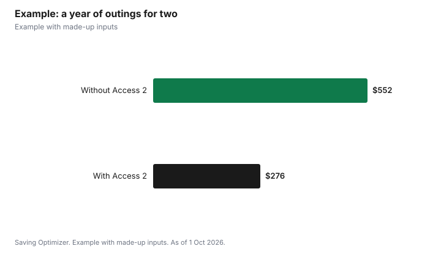

Entertainment · Canada
The Access 2 Card: Free Support-Person Tickets at Canadian Venues

The Access 2 Card lets a person with a permanent disability bring a support person free to more than 500 participating movie theatres, cultural attractions, entertainment venues and recreation facilities across Canada. The cardholder pays regular admission and the support person gets in free. To qualify, you must have a permanent disability that requires a support person when you visit these venues, confirmed by an authorized health care professional on the application. The application page lists an administration fee of $25 for a new three-year card or $35 for a five-year card. You must show the physical card, and most venues, including Cineplex and Landmark, require you to buy at the box office rather than online.
Key takeaways
- Support person gets free admission; the cardholder pays regular admission.
- Over 500 participating venues in all 10 provinces, Yukon and the Northwest Territories (Easter Seals).
- For people of all ages with a permanent disability who need a support person.
- Support person must be 18 or older and may be a relative.
- Fee on the application page: $25 for 3 years or $35 for 5 years.
- Show the physical card; online purchases are often not allowed.
How it works
Easter Seals Canada describes Access 2 as a partnership, launched in 2004, with over 500 movie theatres, cultural attractions, entertainment venues and recreation facilities. When the cardholder presents a valid card at a participating venue, their support person receives free admission, while the cardholder pays regular admission. Easter Seals says the card is accepted at venues, festivals, concerts and special events in all 10 provinces, the Yukon and the Northwest Territories. The full list is on the Access 2 site's Participating Venues page.
Who is eligible
The Access 2 site sets two tests. You must live with a permanent disability, which it defines as an impairment or functional limitation, physical, mental, intellectual, cognitive, learning, communication or sensory, that restricts your ability to attend participating venues by yourself and that will remain for the rest of your life. And the nature of your disability must require the assistance of a support person at these venues.
| Rule | Detail |
|---|---|
| Permanent disability | Lifelong, and restricts attending venues alone |
| Need for a support person | Because of the impairments linked to the disability |
| Support person age | 18 or older |
| Support person relationship | May be related to the cardholder |
| Support person training | Need not be a registered PSW unless the venue says so |
| Applicant age | All ages |
A support person is someone who accompanies the cardholder to provide help that venue staff do not, such as with eating, medication, communication or using washrooms. One note matters for families: if the cardholder is admitted free because of their age, the Access 2 Card cannot be used at that time.
How to apply
- Download the application form from the Access 2 site and complete Section B, Applicant Information, in the name of the person with the disability.
- Have Section C, Health Care Professional Authorization, completed by one of the 12 health care professionals listed on the form, or by the executive director of a disability service organization. The person signing cannot be related to you. If you are registered with CNIB, a copy of your CNIB identification card can replace Section C.
- Complete Section D and pay the administration fee by cheque or money order to Easter Seals Canada, or online by credit card, Visa or Mastercard debit, or PayPal.
- Submit sections B, C and D by email, fax or mail.
- Allow up to four weeks for the card to arrive.
Fees, renewals and replacements
The Access 2 application page lists an administration fee of $25 for a new three-year card and $35 for a new five-year card. An Easter Seals Canada page lists $20 and $30, so confirm the amount on the application form when you apply. Renewals also have a fee, but renewal applicants do not need to resubmit Section C, and online renewals do not need a form. The site recommends renewing two months before the expiry date printed on your card. A lost card must be replaced by buying a new one, which is valid for another three or five years, and the lost card is deactivated. Each person can hold only one valid card. You do not need to be a Canadian citizen, but you need a Canadian mailing address and must pay in Canadian dollars.
| Item | Detail |
|---|---|
| New 3-year card | $25 (application page) |
| New 5-year card | $35 (application page) |
| Processing | Allow up to four weeks |
| Renewal | Fee applies; no Section C needed |
| Lost card | Buy a replacement; old card deactivated |
Using the card
- Bring the physical card every time; the Access 2 site says it must be presented.
- Expect to buy at the box office. The site says that in most cases you cannot buy online or advance tickets with the card, and that Cineplex and Landmark theatres do not permit online tickets with it.
- Call ahead for timed-entry attractions and performances to ask how to reserve the support person's ticket.
- Compare with each venue's own policy. Some venues offer free attendant admission without the card; for example, the Canadian Museum of History admits a single attendant accompanying a person with a disability free, reserved in person or by phone.
Other ways to save alongside the card
Access 2 only covers the support person, so combine it with regular discounts for the cardholder. Movie theatres' discount days, such as Cineplex's Big Deal Tuesdays and Landmark's Reel Deal Tuesday, lower the cardholder's ticket. Free museum nights and library pass programs work for both people. If the cardholder is a student, a senior or under 25, check whether a venue's own age-based price is cheaper. Some programs give free admission to young people, and in that case the Access 2 rule about age-based free admission means the card would not be used for that visit.
Example with made-up inputs
These numbers are an example with made-up inputs. A cardholder and her support person go to 12 movies and 4 attractions a year. Movie tickets average a made-up $13 and attraction admission a made-up $30. Without the card, two people pay $312 for movies and $240 for attractions, or $552. With the card, the support person is free at each visit, saving $156 plus $120, or $276 a year. The $35 five-year card costs $7 a year.
| Visits | Without card (two people) | With card | Saved |
|---|---|---|---|
| 12 movies at $13 | $312 | $156 | $156 |
| 4 attractions at $30 | $240 | $120 | $120 |
| Total | $552 | $276 | $276 |

Steps
- Check the eligibility rules and the participating venue list.
- Book a health care professional to complete Section C.
- Choose a three- or five-year card and pay the fee.
- Submit the application and allow four weeks.
- Call venues ahead about booking and timed entry.
- Renew two months before expiry.
Common mistakes
- Trying to buy movie tickets online with the card.
- Leaving the physical card at home.
- Using the card when the cardholder already gets in free because of age.
- Letting the card expire right before a planned outing.
Related: cheap movie days and free museum and gallery nights.
Sources
- Easter Seals Canada, About the Access 2 Card Program, easterseals.ca, as of 1 Oct 2026.
- Access 2 Card, Program Eligibility, Apply First Time and Frequently Asked Questions, access2card.ca, as of 1 Oct 2026.
- Canadian Museum of History, Plan your visit, historymuseum.ca, as of 1 Oct 2026.
- Ticket prices in the example are made-up inputs.
Frequently asked questions
What is the Access 2 Card?
A card from Easter Seals Canada that gives a support person free admission at participating venues when the cardholder, who has a permanent disability, pays regular admission.
Who qualifies for an Access 2 Card?
People of any age with a permanent disability that requires a support person at participating venues, confirmed by an authorized health care professional.
How much does the Access 2 Card cost?
The application page lists $25 for a new three-year card and $35 for a five-year card; an Easter Seals page shows $20 and $30, so check the form.
Can I buy Cineplex tickets online with Access 2?
No. Access 2 says Cineplex and Landmark do not permit online tickets with the card.
Does the support person have to be a PSW?
No. They must be 18 or older and may be related, and need not be a registered PSW unless a venue requires it.
How long does it take to get an Access 2 Card?
Allow up to four weeks after submitting your application.
Researched and drafted with AI assistance and fact-checked against official Canadian sources. How we create content.
Disclosure: Saving Optimizer may earn a commission if a partner link is added later. No partnership is claimed on this page. Education only.